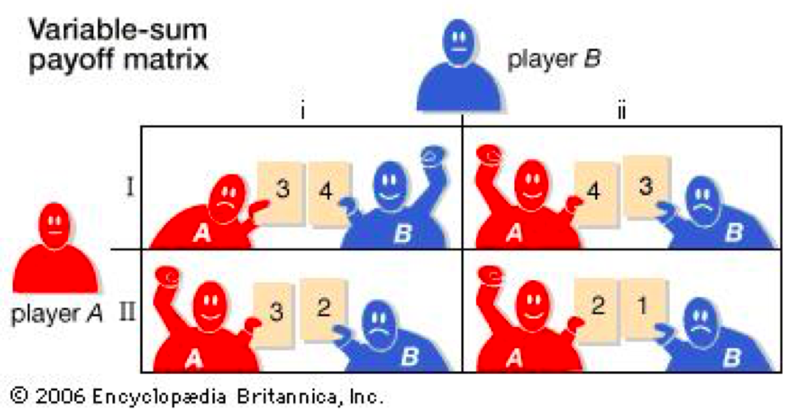

The area within mathematical logic which surrounds definability, often with regards to subsets of natural and real numbers.
“(logic) A branch of mathematical logic studying computable functions and Turing degrees, concerned with questions such as "What does it mean for a function from the natural numbers to themselves to be computable?" and "Can noncomputable functions be classified into a hierarchy based on their level of noncomputability?".” – Wikipedia
A branch of mathematical logic which characterises proofs as formal mathematical objects to allow them to be analysed through mathematical techniques.
“Some of the major areas of proof theory include structural proof theory, ordinal analysis, provability logic, reverse mathematics, proof mining, automated theorem proving, and proof complexity.” – Wikipedia
This is the study of how mathematical structures are classed from the viewpoint of mathematical logic (e.g. groups, fields, graphs).
"the study of mathematical models of conflict and cooperation between intelligent rational decision-makers".
| Zero sum game | A | B |
|---|---|---|
| A | -1, 1 | 3, -3 |
| B | 0, 0 | -2, 2 |
This is a branch of the field of theory of computation within theoretical computer science which looks at the classifying of computational problems based upon their level of difficulty. The theory looks at algorithms based upon how many resources, how much time, etc they take to execute.
A form of computing in which processes run in parallel. Simulate reality. Density of time. Numbers are not dense, rational numbers are. Density of time in synchronous and asynchronous scenarios.
This is a discipline of mathematics which formalises mathematical structure and its concepts in an abstract way using a labelled-directed graph.
It stated that if τ is a first-order-sentence such that τ is valid (true under Any interpretation), then τ is provable from the axiomatic frame of the first order logic. Meaning, given a sentence which is valid under any interpretation, a proof can be found for any deduction of the sentence.